Introdução
O que é o Gerador de Escala e como ele funciona
O Gerador e Gerenciador de Escala é um sistema web completo para criação e gerenciamento de escalas de plantão operacional. Com ele, é possível cadastrar funções, militares, vínculos entre alas e responsáveis, registrar afastamentos e gerar automaticamente o calendário mensal de serviço — criando com facilidade a escala do mês e facilitando o controle e a distribuição de AC4 ao longo do mês.
Login com Google
Autenticação segura vinculada à sua conta Google
Apenas usuários autenticados podem acessar o sistema, garantindo que os dados fiquem seguros e vinculados à sua conta Google.
- 1Abra o sistema no navegador — a tela de login aparecerá automaticamente.
- 2Clique no botão
Entrar com Google(azul, com o logo do Google). - 3Uma janela pop-up do Google será aberta. Selecione ou insira sua conta Google.
- 4Após autenticar, o pop-up fecha e o sistema carrega automaticamente seus dados salvos.
Cadastrar Funções
Cargos e atividades executadas durante o serviço operacional
Funções são os cargos ou atividades que os militares exercem durante o plantão. Atenção: as funções cadastradas nesta etapa são adicionadas automaticamente em todas as alas.
O sistema trata nomes repetidos de forma segura: diferenças de maiúsculas, minúsculas ou espaços extras não criam uma nova função. Assim, socorrista 2, Socorrista 2 e SOCORRISTA 2 são considerados o mesmo nome.
Se houver conflito entre uma função global e uma função específica de ala com o mesmo nome, a função global será mantida normalmente e a função específica será renomeada automaticamente, por exemplo: Socorrista 2 (2).
Motorista UR
Socorrista
Auxiliar ABT
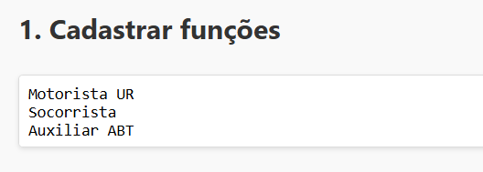
- 1Localize a caixa de texto na seção
1. Cadastrar Funções. - 2Digite o nome de cada função em uma linha separada.
- 3As funções são salvas automaticamente ao avançar para a próxima etapa.
Cadastrar Militares
Pessoas que serão alocadas nas funções do plantão
São os profissionais que serão distribuídos nas funções ao longo da escala. Cada militar deve ser cadastrado com o nome completo, um por linha.
CB QPC 00000 FULANO DE TAL
CB QPC 00001 SICLANO
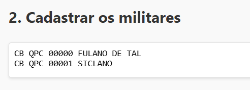
- 1Acesse a seção
2. Cadastrar Militares. - 2Insira o nome de cada militar em uma linha separada.
- 3Ao clicar fora da caixa ou avançar, o sistema atualiza automaticamente os seletores das etapas seguintes.
Gerar Vínculos
Conecte funções a militares em cada ala
Vínculos conectam cada função a um militar responsável dentro de cada ala — Alpha, Bravo, Charlie e Delta. Essa configuração determina quem assume cada papel em cada turno.
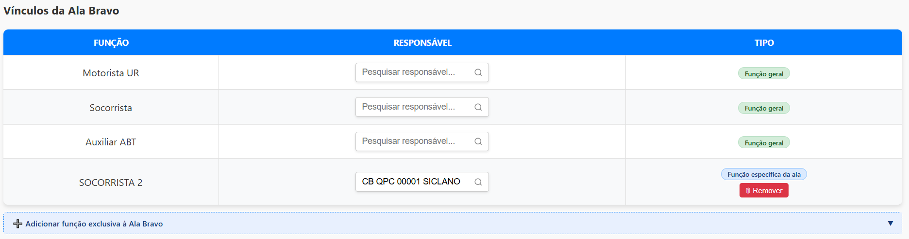
- 1Na seção
3. Gerar Vínculos, o sistema exibe automaticamente um painel para cada ala com as funções cadastradas. - 2Para cada função, use o campo de busca para localizar e selecionar o militar responsável. Digite parte do nome para filtrar rapidamente.
- 3Funções sem responsável vinculado gerarão vagas de AC4 no calendário para aquela ala.
Socorrista 2 e a específica da Ala Alpha pode virar Socorrista 2 (2).
Cadastrar Afastamentos
Registre períodos de indisponibilidade de militares
Afastamentos registram períodos em que um militar não estará disponível — férias, licença médica, curso, entre outros. Nesses dias, o sistema gera automaticamente uma vaga de AC4 para a função do militar ausente.
Se o afastamento for cadastrado depois que o calendário já foi gerado, o sistema verifica os dias em que o militar estava escalado e pode transformar essas funções em vaga de AC4. Quando necessário, um aviso é exibido antes da alteração. Funções bloqueadas preservam os dados preenchidos manualmente.
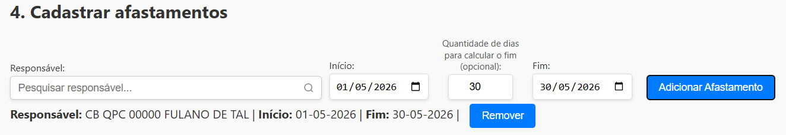
- 1Selecione o militar no campo de busca (digite o nome para filtrar).
- 2Informe a data de início do afastamento.
- 3Opcionalmente, informe a quantidade de dias — o sistema calculará a data de término automaticamente.
- 4Confirme ou ajuste a data de fim manualmente, se necessário.
- 5Clique em
Adicionar Afastamento. O período aparecerá na lista abaixo. - 6Para remover um afastamento, clique em
Removerao lado do registro.
Configurar Tipo de Escala
Defina o modelo de turno antes de gerar o calendário
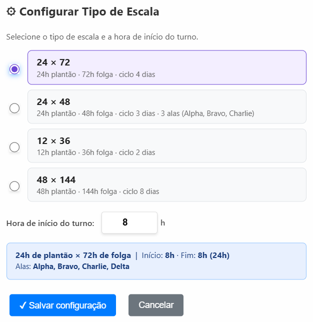
Antes de gerar o calendário, defina o tipo de escala, o horário de início do turno e, se necessário, a data de referência da Ala Alpha. Clique no botão ⚙ Configurar Escala, ao lado do botão "Gerar Calendário", e selecione o modelo desejado.
A data de referência padrão é 21/03/2024, data em que a Ala Alpha estava de serviço. Essa referência é usada para manter a continuidade da sequência das alas ao gerar meses diferentes. Altere essa data apenas se a escala da unidade precisar ser recalculada a partir de outra data em que a Ala Alpha tenha trabalhado.
| Tipo | Como funciona |
|---|---|
| 24 × 72 | 24h de plantão e 72h de folga, usando Alpha, Bravo, Charlie e Delta. É o modelo padrão. |
| 24 × 48 | 24h de plantão e 48h de folga, usando Alpha, Bravo e Charlie. |
| 12 × 36 | Dois turnos por dia, por exemplo 08h–20h e 20h–08h, mantendo a sequência das alas por turno. |
| 48 × 144 | 48h de plantão e 144h de folga, usando Alpha, Bravo, Charlie e Delta. |
Gerar Calendário
O coração do sistema — visualize e edite a escala mensal
Com funções, militares, vínculos e configurações definidos, é hora de gerar o calendário mensal.
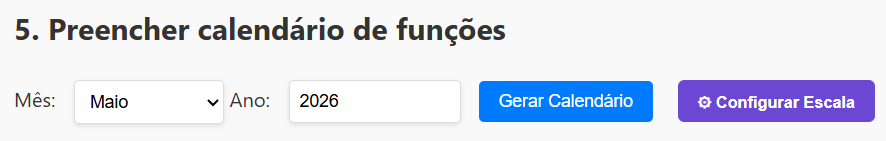
- 1Selecione o mês e informe o ano desejado.
- 2Clique em
Gerar Calendário. - 3O calendário exibirá cada dia com a ala de plantão e os militares alocados em cada função.
- 4Funções sem responsável serão marcadas como
AC4— clique na vaga para selecionar o militar de AC4. - 5É possível trocar o responsável de qualquer função diretamente no calendário gerado.
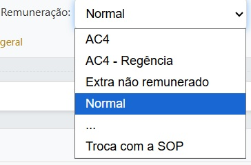
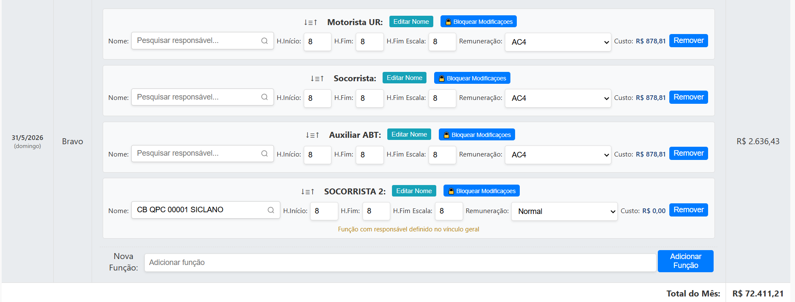
Recursos disponíveis no calendário
- 💰Custos: veja o gasto por função no dia, o total de AC4 por dia e o total de AC4 do mês.
- 🏷️Tipo de serviço: defina se a função será
AC4,AC4 - Regência,Normal,Extra não remunerado,Troca com a SOPou.... Apenas AC4 e AC4 - Regência entram no cálculo de valor; os demais tipos servem para registrar o serviço sem gerar valor de AC4. - ➕Funções por dia: adicione ou remova uma função específica em um dia e ala determinados. Ao remover uma função do calendário, ela sai apenas daquele dia/turno; a função cadastrada no vínculo geral continua existindo para os demais dias.
- ✏️Editar nome: edite o nome de uma função em um dia e ala específicos. Quando a função veio do vínculo geral, a edição vale somente para aquele dia/turno, sem alterar o cadastro da função nos outros dias.
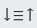
Reordenar: arraste pelo ícone para mudar a posição de uma função dentro do mesmo dia.- 🔒Bloquear função: bloqueie uma função para congelar responsável, remuneração e horários preenchidos. Enquanto estiver bloqueada, ela não será alterada por afastamentos, regeneração do calendário ou ajustes automáticos. Ao desbloquear, o sistema restaura os dados salvos no momento do bloqueio.
- ⏱️Edição de hora: edite a hora de início e fim do serviço de uma função em um determinado dia. Se o tipo de remuneração for AC4, o custo é recalculado automaticamente com base no horário definido.
Total de gasto do mês:
No calendário, é exibido o valor total estimado de gastos do mês. Atenção: esse valor é apenas uma estimativa, pois o cálculo considera todas as funções existentes, mesmo sem militares adicionados às escalas. Para consultar o valor real de gastos do mês, o usuário deve abrir a "Escala somente de AC4". Nessa escala, o total é calculado apenas com as funções que já foram preenchidas por militares.
Serviços de AC4 que Viram o Mês
A cota mensal de AC4 é de uso exclusivo do mês vigente, não podendo ser transferida ou acumulada para o período seguinte. Contudo, há uma situação que requer tratamento específico: os serviços iniciados no último dia do mês e que se estendem além da meia-noite. Nesses casos, a execução ocorre em dois meses distintos, demandando a utilização de cotas diferentes.
Para garantir o cálculo correto do gasto e, ao mesmo tempo, evitar duplicidade na escala divulgada ao efetivo, o sistema disponibiliza dois recursos complementares:
Opção "Ocultar da Escala"
Disponível apenas no primeiro dia do mês, esta opção deve ser utilizada quando o militar iniciou o serviço de AC4 no último dia do mês anterior e permaneceu em serviço após a meia-noite.
Nessa situação, o AC4 precisa ser lançado no novo mês a partir de 00h00 para que o sistema calcule corretamente o consumo da cota vigente. Contudo, como o serviço já consta na escala do mês anterior — com os respectivos horários de início e término —, ele não deve ser exibido novamente na escala do mês atual. Para evitar essa duplicidade, basta marcar a opção "Ocultar da Escala".
Opção "Hora Fim na Escala"
Como a cota de AC4 deve ser utilizada obrigatoriamente dentro do mês de referência, o campo "Hora Fim" deve registrar apenas o horário correspondente ao encerramento do serviço dentro do mês atual, limitado a 00h00 (meia-noite). Dessa forma, o sistema consegue calcular corretamente o consumo da cota mensal.
No entanto, para evitar que o militar interprete equivocadamente que o serviço encerra à meia-noite — quando, na prática, ele continua após a virada do mês —, foi criado o campo "Hora Fim na Escala". Assim, no último dia do mês, "Hora Fim" destina-se exclusivamente ao cálculo do consumo da cota de AC4 dentro do mês vigente, enquanto "Hora Fim na Escala" destina-se exclusivamente à apresentação correta do horário real de término do serviço na escala.
Documentos Gerados
Relatórios e escalas prontos para impressão ou publicação
Antes de abrir qualquer documento, defina o intervalo de Início da Escala e Fim da Escala (dias do mês) para filtrar exatamente o período desejado.
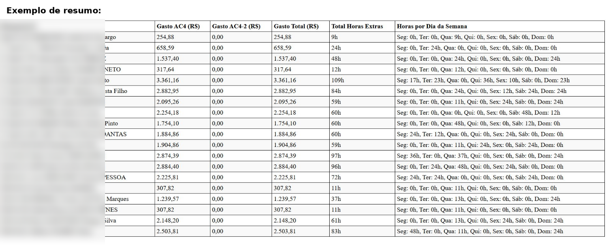
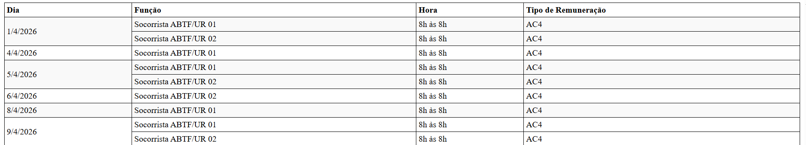
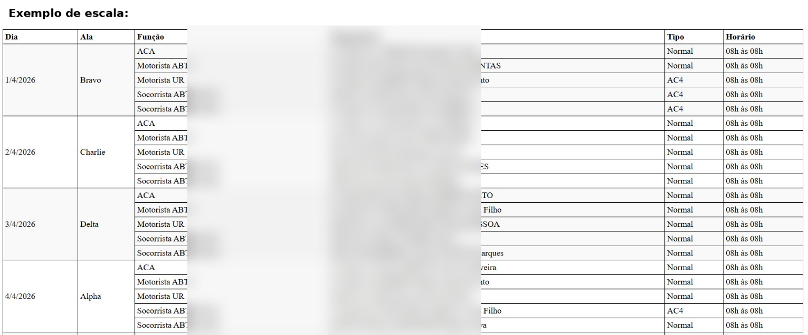
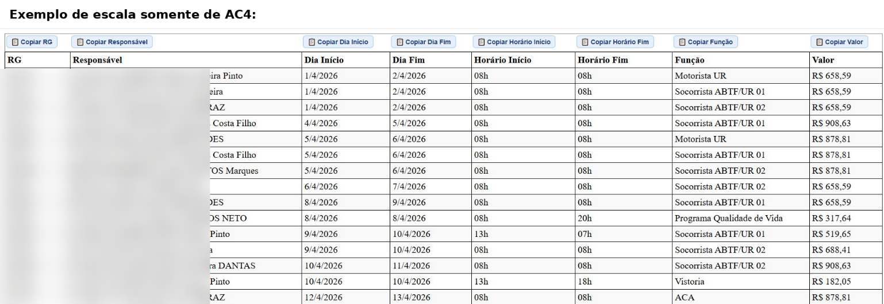
| Botão | O que exibe |
|---|---|
| 📄 Resumo | Valor total por militar, horas trabalhadas no mês e horas por dia da semana durante o período. Abre em nova guia do navegador. |
| 📋 Vagas Disponíveis | Dias e funções ainda sem militar alocado (vagas de AC4 em aberto). Abre em nova guia do navegador. |
| 📅 Escala Completa | Escala completa do período, formatada para impressão ou publicação — com todos os dias, alas, funções, militares e tipo de serviço (normal, AC4, extra). Abre em nova guia do navegador. |
| 💰 Escala de AC4 | Escala exclusiva dos militares que realizaram AC4, com função e custo correspondentes. Dados já formatados para cópia direta na planilha de prestação de contas. Cada coluna possui botão de cópia, como RG, Responsável, Dia Início, Dia Fim, Hr. Inicial, Hr. Final, Função e Valor. Abre em nova guia do navegador. |
Recursos Inteligentes
Proteções automáticas para evitar erros na escala
O sistema conta com mecanismos inteligentes que ajudam a evitar inconsistências e erros comuns durante o preenchimento da escala. Esses recursos atuam em segundo plano, alertando o usuário antes de confirmar ações que possam comprometer a integridade dos dados.
- ⚠️Militar em duas alas: se um militar for selecionado para uma função já existente em outra ala, o sistema exibe um aviso e solicita confirmação antes de prosseguir.
- 🏥Militar afastado: ao selecionar um militar para uma função, o sistema verifica automaticamente se ele possui afastamento registrado para aquele dia e exibe um alerta caso isso ocorra.
- 💡Outras verificações: o sistema realiza diversas outras checagens em tempo real para garantir que a escala gerada seja consistente e livre de conflitos operacionais.
Backup e Armazenamento
Proteja seus dados localmente e na nuvem
Backup Local (PC)
Salve todos os dados em um arquivo .json no seu computador — uma proteção extra independente da nuvem.
- ⬆Exportar: clique em
⬆ Exportar para PC. Um arquivobackup_escala_AAAA-MM-DD.jsonserá baixado automaticamente. - ⬇Importar: clique em
⬇ Importar do PC, selecione o arquivo.jsonsalvo. O sistema carregará todos os dados e perguntará se deseja salvar na nuvem também.
Backup na Nuvem
O sistema oferece até 12 slots na nuvem, vinculados à sua conta Google — acessíveis de qualquer dispositivo.
- ☁Salvar: clique em
☁ Salvar na Nuvem, escolha "Criar novo save", dê um nome descritivo (ex.: "Escala Junho 2025") e clique em💾 Salvar. - 🔄Substituir: se os 12 slots estiverem ocupados, selecione "Substituir existente", escolha o slot a sobrescrever e salve.
- 📂Carregar: clique em
☁ Carregar / Gerenciare depois emCarregarao lado do save desejado. - 🗑Excluir: clique em
Excluirpara remover um save permanentemente.
Auto-Save
O auto-save grava automaticamente os dados em um slot da nuvem sempre que uma alteração é feita, eliminando a necessidade de salvar manualmente com frequência.
- 1No menu
Auto-save, clique no seletor e escolha um slot da nuvem existente. - 2O indicador mudará para
● Auto-save ativocom o nome do slot selecionado. - 3A partir daí, qualquer alteração nos dados será salva automaticamente naquele slot.
- 4Para desativar, selecione
-- Desativado --no seletor.
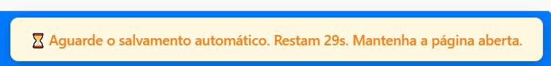
Capacidade da Nuvem
Estimativas baseadas no plano gratuito do Firebase (Firestore)
Cada usuário pode manter até 12 saves na nuvem. Em uso normal, cada save costuma ficar em torno de 3 KB a 5 KB após compressão, então uma conta com 12 saves tende a usar aproximadamente 36 KB a 60 KB. Considerando uma média de 50 salvamentos diários por usuário — valor já bastante elevado para uso normal — o sistema atende confortavelmente até 400 usuários por dia sem ultrapassar os limites do plano gratuito.
Considerando um usuário por unidade operacional, o plano gratuito utilizado é suficiente para atender a demanda esperada.